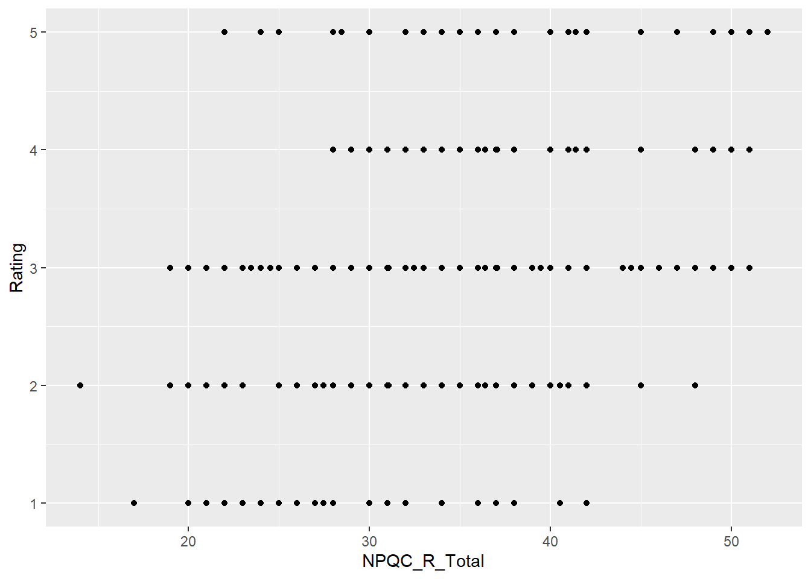

Capítulo 4 Gráficos
En este capítulo vamos a revisar algunos aspectos básicos para hacer gráficos en R.
4.1 ¿Cómo graficamos en R?
Revisa este video y trata de responder:
- ¿Cómo se hace un buen gráfico?
- ¿Qué significa que se usen capas para hacer gráficos en R?
4.2 Gráficos de dispersión
Primero seteamos nuestro directorio de trabajo.
Para graficar cargamos la librería ggplot2 (que tiene que haber sido previamente instalada). Al mismo tiempo se cargan otras librerías que nos serviran. Si no tienes estas librerías debes instalarlas. Finalmente importamos un set de datos y lo miramos.
setwd("C:/Users/Usuario/Documents/JoseLuis/UTalca_2018/Estadistica_Bookdown/estadistica")
library(ggplot2)
library(reshape)
library(plyr)
library(Rmisc)
facebookData <- read.delim("data/FacebookNarcissism.dat", header = TRUE) # load data
head(facebookData)## id NPQC_R_Total Rating_Type Rating
## 1 1 31 Attractive 2
## 2 1 31 Fashionable 2
## 3 1 31 Glamourous 2
## 4 1 31 Cool 2
## 5 2 37 Attractive 2
## 6 2 37 Fashionable 2En este estudio se recolectaron una serie de datos de los participantes relacioandos con rasgos de personalidad y niveles de narcisimo. id indica la identidad del participante. NPQC_R_Total indica la puntuación total en el cuestionario de narcisismo. Rating_Type una característica de personalidad y Rating indica la calificación (en una escala de 1 a 5) de esa característica de personalidad.
Hagamos un primer gráfico de dipersión. Ubcaremos NPQC_R_Total en el eje X y Rating en el eje Y.
graph <- ggplot(facebookData, aes(NPQC_R_Total, Rating))
graph + geom_point() + labs(title = "plot 1")